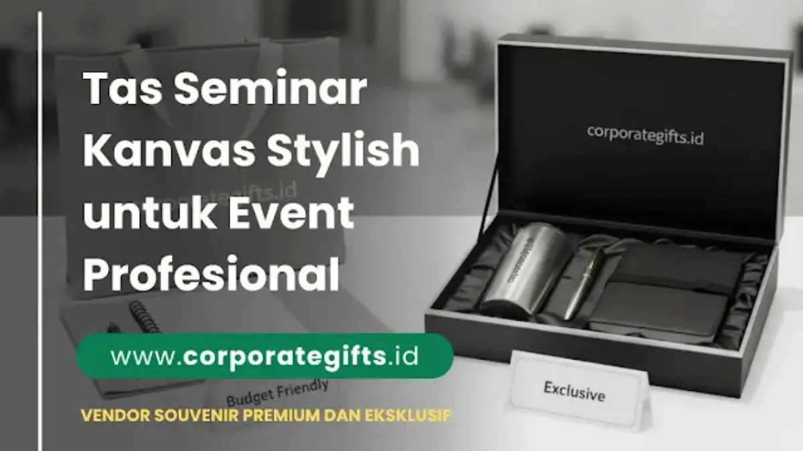

Corporate Gifts ID - Tas seminar kanvas adalah tas berbahan kain kanvas katun tebal yang difungsikan sebagai wadah perlengkapan peserta dalam acara seminar, lokakarya, pelatihan kerja, maupun konferensi korporat. Tas ini memadukan tampilan elegan, daya tahan tinggi, dan fleksibilitas pencetakan logo, menjadikannya pilihan utama bagi organisasi yang ingin menghadirkan cinderamata eksklusif sekaligus mendukung strategi branding jangka panjang.
Dalam ekosistem acara modern, goodie bag seminar tidak lagi dipandang sebagai formalitas logistik semata. Pemilihan material yang berkelas mencerminkan komitmen penyelenggara terhadap standar mutu dan keberlanjutan lingkungan, yang secara langsung mengangkat reputasi brand di mata audiens profesional.
Poin Kunci Tas Seminar Kanvas:
- Estetika Premium: Tekstur alami kanvas memberikan nuansa eksklusif yang cocok untuk format acara formal maupun semi-formal.
- Daya Beban Optimal: Serat tenun rapat (10 oz - 14 oz) sanggup menopang laptop, binder dokumen, botol minum, dan modul tebal tanpa risiko sobek.
- Ramah Lingkungan (Eco-Friendly): Berbasis serat kapas alami yang dapat dicuci dan digunakan berulang kali selama bertahun-tahun.
- Media Branding Berkelanjutan: Menghasilkan impresi visual berulang ketika tas dipakai peserta dalam aktivitas harian pasca-acara.
- Fleksibilitas Kustomisasi: Mendukung teknik sablon manual, bordir komputer, DTF digital, serta kombinasi material kulit sintetis.
Peran Strategis Tas Seminar Kanvas dalam Acara Profesional
Ketika peserta hadir dalam sebuah forum bisnis atau pelatihan eksekutif, tas seminar adalah benda fisik pertama yang mereka terima di meja registrasi. Kesan awal ini sangat menentukan persepsi peserta terhadap profesionalitas penyelenggara. Tas seminar kanvas berhasil menjembatani kebutuhan fungsional wadah paket seminar kit dengan estetika modern yang stylish.
Berbeda dari tas plastik atau spunbond tipis yang kerap kali langsung dibuang setelah acara selesai, tas kanvas memiliki nilai guna sekunder yang tinggi. Peserta dengan senang hati menggunakannya kembali untuk bekerja ke kantor, menghadiri kuliah, berbelanja, atau traveling, sehingga memperluas jangkauan promosi merek Anda secara organik.
Mengapa Tas Seminar Kanvas Sangat Banyak Diminati?
Kain kanvas dikenal luas di industri konveksi cinderamata karena kekuatan mekanis tenunannya. Karakteristik permukaannya yang padat memungkinkan tinta sablon atau benang bordir menempel sempurna dengan detail garis yang sangat tajam.
Beberapa faktor utama yang menjadikan tas seminar berbahan kanvas selalu menjadi primadona antara lain:
- Tampilan Berkelas: Memberikan nuansa elegan tanpa kesan kaku, selaras dengan tren gaya kerja modern yang dinamis.
- Kekuatan Struktur: Mampu menahan beban berat dokumen fisik, perangkat tablet, dan pernak-pernik seminar tanpa meregang.
- Perawatan Mudah: Dapat dicuci berulang kali tanpa merusak struktur kain ataupun memudarkan warna dasar.
- Nilai Investasi Tinggi: Memberikan rasio nilai guna terhadap biaya (ROI) yang jauh lebih unggul dibandingkan tas promosi sekali pakai.
Jenis-Jenis Tas Seminar Kanvas yang Populer
Setiap jenis kegiatan memiliki target peserta dan kebutuhan mobilitas yang berbeda. Berikut tiga varian model tas seminar kanvas yang paling banyak dipesan oleh korporat dan instansi:
1. Tote Bag Kanvas Klasik
Model tote bag merupakan opsi paling favorit untuk seminar bertema bisnis kreatif, lokakarya teknologi, konferensi akademis, dan gathering UMKM. Desainnya yang minimalis dan ringan sangat memudahkan peserta menyimpan buku catatan, modul presentasi, dan cinderamata lainnya. Varian ini umumnya memanfaatkan bahan kanvas berbobot 10 oz hingga 12 oz yang kokoh namun tetap fleksibel.
2. Tas Selempang Kanvas (Sling Bag / Messenger Bag)
Bagi pelatihan profesional yang memerlukan mobilitas tinggi seperti diklat lapangan, workshop teknis, atau event startup, tas selempang kanvas menawarkan kenyamanan ekstra. Dilengkapi dengan tali panjang yang dapat diatur serta kompartemen resleting fungsional, tas selempang memberikan kesan kasual-profesional yang sangat disukai generasi muda dan profesional aktif.
3. Tas Ransel Kanvas (Backpack)
Untuk acara level eksekutif, retret kepemimpinan, atau pelatihan berdurasi beberapa hari, ransel berbahan kanvas kanvas tebal 14 oz merupakan pilihan prestisius. Kapasitas ruang yang luas mampu menampung laptop hingga ukuran 15 inci beserta adaptor pengisi daya, menjadikannya hadiah perusahaan yang sangat berharga bagi penerimanya.

Detail tekstur bahan kanvas tebal 10-12 oz yang kokoh dengan hasil sablon logo presisi untuk acara formal.
Kelebihan Tas Seminar Kanvas Dibanding Bahan Lain
Jika dibandingkan dengan material suvenir lainnya seperti spunbond (non-woven), polyester, blacu tipis, atau kulit sintetis murah, tas berbahan kanvas menawarkan sejumlah keunggulan komparatif:
- Tekstur Alami dan Nyaman: Kanvas katun memiliki sirkulasi udara baik dan ramah di kulit, tidak menimbulkan bau sintetis menyengat.
- Ketahanan Abrasi Luar Biasa: Tidak mudah robek akibat gesekan sudut binder atau ujung laptop tajam.
- Dukungan Keberlanjutan Korporat (ESG): Membantu mewujudkan komitmen perusahaan dalam mengurangi limbah kemasan sekali pakai.
- Opsi Kustomisasi Luas: Tersedia dalam warna natural (greige), broken white, navy, hitam, hingga warna pantone korporat khusus.
Tabel Karakteristik dan Estimasi Biaya Tas Seminar Kanvas
Berikut rangkuman spesifikasi teknis, daya tampung, serta kisaran harga pengadaan tas seminar kanvas untuk mempermudah perencanaan anggaran B2B Anda:
| Model Tas | Ketebalan Bahan | Kapasitas & Fitur | Kesesuaian Acara | Estimasi Harga Satuan |
|---|---|---|---|---|
| Tote Bag Kanvas Standar | Kanvas 10 oz - 12 oz | Dokumen A4, tumbler, pouch pulpen, tali jinjing standar | Seminar umum, webinar offline, wisuda, workshop digital | Rp25.000 - Rp45.000 |
| Tas Selempang Kanvas | Kanvas 12 oz + Furing | Tablet/iPad, modul tebal, saku resleting depan, tali webbing tebal | Pelatihan teknis, diklat instansi, forum pemuda & startup | Rp50.000 - Rp90.000 |
| Ransel Kanvas Premium | Kanvas 14 oz Heavy-Duty | Slot laptop 14-15 inci busa tebal, multi-kompartemen, aksen kulit | Konferensi nasional, retret eksekutif, gathering VIP BUMN | Rp100.000 - Rp200.000 |
Kisaran Harga dan Tips Memilih Vendor Tas Seminar
Penentuan harga pengadaan tas seminar dipengaruhi oleh kuantitas pemesanan (MOQ), tingkat ketebalan kain kanvas, ukuran dimensi, tingkat kerumitan grafis logo, serta kelengkapan aksesoris (resleting YKK, kancing magnet, atau lapisan furing anti-air).
Agar agenda pengadaan Anda berjalan lancar tanpa kendala teknis, perhatikan panduan praktis berikut sebelum memilih vendor:
- Verifikasi Kualitas Bahan Fisik: Mintalah sampel bahan atau dummy tas untuk memastikan ketebalan kanvas benar-benar sesuai spesifikasi kontrak (minimal 10 oz).
- Validasi Mockup Digital dan Proofing: Lakukan approval ukuran dan proporsi logo sebelum vendor memulai proses produksi massal.
- Cek Portofolio dan Rekam Jejak Vendor: Pastikan vendor memiliki pengalaman melayani pengadaan B2B korporat skala menengah hingga besar dengan standar QC ketat.
- Perhitungkan Waktu Produksi dan Logistik: Sediakan buffer waktu minimal 10-14 hari kerja untuk produksi dan pengiriman aman ke lokasi venue acara.
Memaksimalkan Branding dan Citra Profesional Perusahaan
Penerapan logo yang tepat pada tas seminar kanvas akan memberikan kesan eksklusif. Untuk desain logo minimalis satu atau dua warna, teknik sablon manual presisi tinggi atau sablon rubber adalah pilihan paling efisien. Sementara itu, untuk emblem korporat berdetail rumit atau acara eksklusif VIP, bordir komputer atau laser patch berbahan kulit memberikan sentuhan kemewahan tersendiri.
Anda juga dapat memadukan tas kanvas dengan item pelengkap lainnya di dalam paket souvenir promosi, seperti tumbler stainless steel berukir grafir, notebook agenda berlogo, dan pen metal eksklusif guna menciptakan pengalaman unboxing yang tak terlupakan bagi setiap tamu undangan.
Kesimpulan dan Rekomendasi Pengadaan
Memilih tas seminar berbahan kanvas adalah langkah strategis dalam menyukseskan event perusahaan. Kombinasi antara kekuatan daya tahan, kenyamanan pemakaian, dan nilai estetika yang tinggi menjadikan tas ini investasi promosi yang sangat efektif dalam memperkuat loyalitas audiens serta reputasi institusi Anda.
Jelajahi berbagai pilihan koleksi merchandise dan paket event kami melalui katalog produk resmi Corporate Gifts ID atau diskusikan kebutuhan kustomisasi Anda bersama tim konsultan kami untuk memperoleh penawaran harga terbaik.